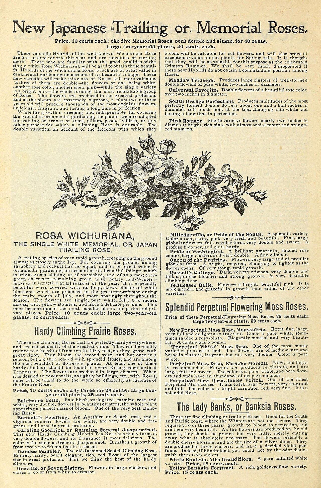

Tips for Changing Trains

電車の乗り換えのコツ
← All articles / 記事一覧へA transfer (乗り換え, norikae) simply means changing from one train or line to another. In Japan the ride is usually the easy part. The real work is finding the right platform in a big station and knowing which gate to pass. Follow the coloured line signs and the transfer arrows, keep your IC card in your hand, and allow more time than your route app suggests at major hubs.
乗り換えは、ある電車から別の路線の電車に移ることです。乗っている時間より、大きな駅で正しいホームや改札を見つけるほうが大変です。路線の色と「乗り換え」の表示をたどり、ICカードを手元に用意し、大きな駅では少し多めに時間を見ましょう。
1. Plan before you enter 入る前に準備する
Check the route in an app (Google Maps, Japan Transit Planner / Navitime) before you reach the gate. Note four things: the line, the train's direction or final destination, the transfer station, and the recommended exit. Screenshot the result — station signs are easy to read, mobile signal underground is not always reliable.
Lines use a letter-and-number code designed for visitors: the Yamanote Line is JY and Shibuya is JY20; Tokyo Metro lines use letters such as G, M and H. Matching the code works even when you cannot read the kanji.
改札に入る前に経路をアプリで確認し、路線・方向（行き先）・乗換駅・出口の4つをメモします。オフライン用にスクリーンショットも撮っておきましょう。路線記号（山手線＝JY、渋谷＝JY20など）を合わせれば、漢字が読めなくても進めます。
2. Follow signs one step at a time 表示を少しずつたどる
Look for 乗り換え / Norikae / Transfer above eye level. Signs usually show the next line's name, colour, symbol and direction. At Tokyo Metro stations, blue signs guide transfers and yellow signs guide exits. A transfer may be on the opposite platform, along a corridor, or up another flight of stairs — follow each sign in order instead of trying to understand the whole station map at once.
A gate (改札, kaisatsu) and an exit (出口, deguchi) are different things: you pass the gate, then follow the numbered exit. When you are transferring, do not follow a general exit sign unless your route tells you to leave the station. If you need to check your phone, step to the wall first so you do not block the crowd.
頭上の「乗り換え」表示を探し、次の路線の名前・色・方向を確認します。東京メトロでは青が乗り換え、黄色が出口の案内です。改札（中に入る場所）と出口（外に出る場所）は別です。乗り換え中に出口の表示についていくと迷うことがあります。
3. Know which kind of transfer you are making 乗り換えには3種類ある
On the same platform / 同じホームで乗り換える
Through services and some connecting lines let you simply walk across the platform and wait for the next train. A change of line name in your itinerary does not always mean you must get off and walk — check the instruction for your specific departure.
一部の直通運転や接続では、ホームを渡るだけで次の電車を待てます。行程表で路線名が変わっても、必ずしも降りて歩く必要はありません。自分の便の案内を確認してください。
Inside the paid area / 改札内で乗り換える
Most transfers stay behind the gates. Follow the corridor, stairs or escalators to the next platform and board; there is nothing to tap again.
ほとんどの乗り換えは改札の内側で完結します。通路・階段・エスカレーターをたどって次のホームへ行き、乗車します。タッチし直す必要はありません。
Out through one gate, back in through another / 改札を出て乗り換える
At some stations you must leave one paid area and enter the next. With an IC card this is quick: tap out, follow the signs, tap in again. Tokyo Metro lists stations where even Metro-to-Metro changes use a special orange transfer gate; complete the change within 60 minutes with a ticket or IC card, or a new fare applies. Follow the signs and the current rules for your own route.
駅によっては、ひとつの改札内から出て次の改札内に入ります。ICカードならタッチして出て、表示に従い、再度タッチして入ります。東京メトロでは、メトロ同士でもオレンジ色の乗換改札を使う駅があり、きっぷまたはICカードで60分以内に乗り換えないと新しい運賃が必要になります。自分の経路の表示と最新ルールに従ってください。
- With a paper ticket, take the ticket the transfer gate returns and insert it at the next gate. Do not throw it away. 紙のきっぷでは、乗換改札が返すきっぷを次の改札に通します。捨てないでください。
- If your card does not open the gate, step aside and use the staffed gate. Repeated tapping or buying a second ticket can start a new fare. カードで改札が開かないときは、列から離れて有人改札を使います。連続タッチや2枚目の購入は新しい運賃の計算につながります。
- If the route becomes unclear, show staff your destination and say “Norikae wa doko desu ka?” (Where is the transfer?). Big stations such as Tokyo, Shinjuku and Ueno have information centres with English-speaking staff. 経路が分からなくなったら、目的地を見せながら「乗り換えはどこですか？」と尋ねます。東京・新宿・上野などの大きな駅には英語対応の案内所があります。
4. At the transfer gate 乗換改札での注意
- Use one IC card only. Do not stack two cards or tap them one after the other at a transfer gate. ICカードは1枚だけ使い、乗換改札で2枚を重ねたり連続でタッチしたりしないでください。
- At simple transfer readers, tap even when you are just changing lines. Skipping the tap can make the fare be calculated for a different route. 簡易改札では、路線を変えるだけでも必ずタッチします。タッチしないと別の経路で運賃が計算されることがあります。
- Using a paper ticket together with an IC card? Insert the paper ticket first, then tap the card. The reverse order may calculate the wrong fare. 紙のきっぷとICカードを併用するときは、きっぷを先に入れてからカードをタッチします。逆だと運賃が誤計算されることがあります。
- Going to the Shinkansen? At the Shinkansen transfer gate, insert your ticket(s) first and then tap the IC card. For a Shinkansen e-ticket, use the same card you registered. 新幹線の乗換改札では、きっぷを入れてからICカードをタッチします。新幹線eチケットの場合は登録したカードを使います。
- If a gate will not open, move out of the queue and ask at the staffed gate instead of forcing it. 改札が開かないときは、列から離れて有人改札で尋ね、無理に通らないでください。
乗換改札ではICカードは1枚だけ。簡易改札でも必ずタッチします。紙のきっぷとICカードを併用するときは、きっぷを先に入れてからカードをタッチしてください。新幹線の乗換改札も同様に、きっぷを入れてからタッチします。
5. Allow enough time 時間に余裕を持つ
A change at a small station can take two or three minutes. At Shinjuku or Tokyo Station, allow roughly 10 minutes for most JR-to-JR changes, 15 minutes between different companies, and 20 minutes for the Keiyo Line at Tokyo Station. Add five more minutes if you have large luggage or a stroller.
JR East publishes standard transfer times at Tokyo Station, measured from the Shinkansen: 8 minutes to the other Shinkansen group, 10 minutes to the Tokaido, Tohoku, Keihin-Tohoku and Yamanote lines, 15 minutes to the Chuo, Sobu and Yokosuka lines, and 20 minutes to the Keiyo Line. These are minimum connection times, not a promise — on your first visit, add a buffer.
小さな駅なら数分ですが、新宿・東京などの大きな駅ではJR同士で10分、会社をまたぐと15分、東京駅の京葉線は20分が目安です。大きな荷物やベビーカーならさらに5分追加しましょう。JR東日本が公開する東京駅の標準時分（新幹線から、東海道・山陽/東北・上越など8分、東海道・東北・京浜東北・山手線10分、中央・総武・横須賀線15分、京葉線20分）も、あくまで目安です。
6. Useful Japanese 使える日本語
| Japanese | Pronunciation | Meaning |
|---|---|---|
| 乗り換えはどこですか。 | Norikae wa doko desu ka? | Where is the transfer? |
| 何番線ですか。 | Nan-bansen desu ka? | Which platform is it? |
| 〇〇線へ行きたいんですが。 | ○○-sen e ikitai n desu ga. | I want to take the ○○ Line. |
| この電車は〇〇行きですか。 | Kono densha wa ○○-yuki desu ka? | Is this train bound for ○○? |
| すみません、教えてください。 | Sumimasen, oshiete kudasai. | Excuse me, please help me. |
ポイントは「乗り換え」「何番線」「行き先」の3つの言葉。行き先を紙やスマホで見せながら聞くと、より伝わります。
7. If something goes wrong トラブル時は
- Wrong train: get off at the next station, check the route again and ask staff how to come back. Staying on to the terminus usually makes things worse. 電車を乗り間違えたら次の駅で降り、経路を確認し直してスタッフに帰り方を尋ねます。終点まで乗り続けるとさらに遠回りになります。
- Missed connection: on urban lines the next train is often minutes away. With an IC card, just take it — the fare adjusts by itself. 乗り換えに間に合わなくても、都市部の路線では数分後に次の電車が来ます。ICカードならそのまま乗っても運賃が自動調整されます。
- Service stopped: listen for okure (delay) or unten miawase (suspension). Ask whether furikae-yusō (alternative transport on another line) is available, and request a delay certificate if you need one. 運休時は「遅れ」や「運転見合わせ」を聞き取ります。「振替輸送」があるか尋ね、必要なら遅延証明書をもらいます。
- Still lost: go to a staffed gate or information centre and show the destination in writing. Step out of the flow of people before you stop. まだ迷ったら、有人改札や案内所へ行き、目的地を文字で見せます。人混みの流れを避けて立ち止まりましょう。
電車を乗り間違えたら次の駅で降り、経路を確認し直します。乗り換えに間に合わなくても都市部では次の電車がすぐ来ます。運休時は振替輸送の有無を尋ね、遅延証明書をもらいます。迷ったら有人改札や案内所で目的地を文字で示します。
Quick checklist 確認リスト
- Save the route screenshot: line, direction, transfer station, exit. / 経路のスクリーンショットを保存：路線・方向・乗換駅・出口。
- Keep one IC card (and a paper ticket, if any) ready before the gate. / 改札前にICカード1枚（紙のきっぷがあればそれも）を用意。
- Follow the transfer colour and sign, not the nearest exit. / 最寄りの出口ではなく、乗り換えの色と表示をたどる。
- With ticket + card, insert the ticket first, then tap. / きっぷ＋カードは、きっぷを先に入れてからタッチ。
- Allow 10–20 minutes at big stations; ask staff when unsure. / 大きな駅では10〜20分を見込み、迷ったらスタッフに聞く。
 Your Guide Buddy / 旅の案内役
Your Guide Buddy / 旅の案内役